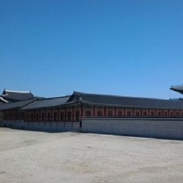
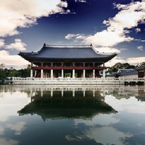
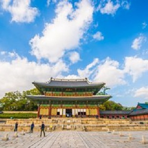
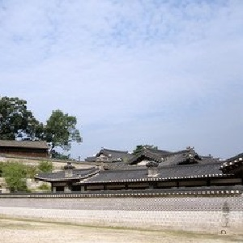
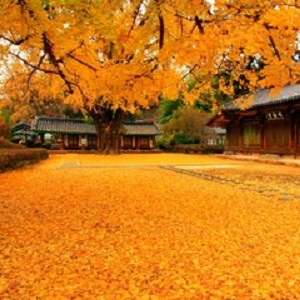
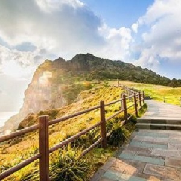
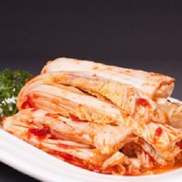
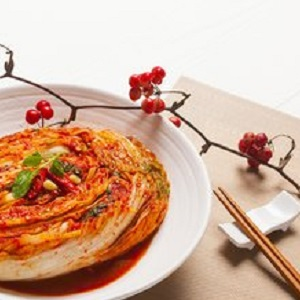

morly旅游网
韩国（Korea），全称大韩民国（대한민국/大韩民国Daehan Minguk），简称韩国（한국/韩国 Hanguk），又称南韩、南朝鲜。成立于1948年8月15日，是位于东亚朝鲜半岛南部的共和国，国名来源于古代朝鲜半岛南部的三韩部落（辰韩、马韩、弁韩），英文名Korea源于古名“高丽”。韩国的行政首都是世宗，总统府和国会目前仍在首尔，韩国成为拥有两个首都的国家。
下面看看韩国的美景有哪些吧！
景福宫
景福宫(韩国语：경복궁，繁体中文：景福宮)：位于韩国首都首尔（旧译“汉城”）钟路区，是一座著名的古代宫殿，是李朝始祖太祖李成桂于公元1394年开始修建的。宫苑正殿为勤政殿，是景福宫的中心建筑，李朝的各代国王都曾在此处理国事。此外，还有思政殿、乾清殿、康宁殿、交泰殿等。宫苑还建有一个10层高的敬天夺石塔，其造型典雅，是韩国的国宝之一。景福宫宫外建有围墙，围墙长3626米、高6.7米。王宫的南面有光化门，东边有建春门，西边有迎秋门，朝北的为神武门。光化门里有兴礼门，兴礼门外有一条东西向的运河，河上横跨一造型精巧的锦川桥。在宫苑莲池的中央有一石舫——庆会楼，曾是当年国王大宴宾客的楼阁。1553年由于火灾烧毁了宫北角的一部分，日军入侵时又将宫苑的大部建筑物破坏，到1865年重建时只有10个宫殿保持完整。
 昌德宫
昌德宫(韩国语：창덕궁，繁体中文：昌德宮)：又名乐宫，是韩国的“故宫”，位于首都首尔（旧译“汉城”）市院西洞，是李朝王宫里保存得最完整的一座宫殿。公元1405年，李朝第三代国王在此建为离宫。壬辰之乱时被烧毁。现存的建筑为公元1611年重建的。这座建筑作为王宫长达300年。整座宫殿内为中国式的建筑，入正门后是处理朝政的仁政殿，公元1804年改建，宫殿高大庄严，殿内装饰华丽，设有帝王御座。殿前为花岗石铺地，三面环廊。殿后的东南部分以乐善斋等建筑为主，是王妃居住的地方。 寝宫乐善斋是一座典型的朝鲜式木质建筑，殿内陈列着王冠、王服以及墨宝、武器和其他手工艺品。院内陈列着王室使用过桥、马车和末代国王所使用的早期汽车等。此外，还有大造殿、宣政殿和仁政殿等。仁政殿后的秘苑建于17世纪，面积约6万坪，是一座依山而建的御花园。苑内有亭台楼阁和天然的峡谷溪流，还有科举时代作为考场的映花堂及建在荷池旁供君王垂钓的鱼水亭、钓鱼台和池中的芙蓉亭等。
 济州岛
济州岛(韩国语：제주도，韩文：제주)：是韩国第一大岛，又名耽罗岛、蜜月之岛、浪漫之岛，位于朝鲜半岛的南端，隔济州海峡与半岛相望，北距韩南部海岸90多公里，地扼朝鲜海峡门户，地理位置十分重要。济州岛总面积1829平方公里，包括牛岛、卧岛、兄弟岛、遮归岛、蚊岛、虎岛34个属岛，东北距全罗南道100公里，是理想的旅游和垂钓胜地。在这里可以观赏名胜古迹、欣赏自然景观，岛上屹立着韩国最高山峰——海拔1950米的汉拿山。还可以登山、骑马、兜风、狩猎、冲浪和打高尔夫球等。这里人烟稀少，土地广阔，不是高山森林，就是农田村舍。农家种的主要是稻米、蔬菜、水果，最多最壮观要属油菜花，春天，遍地一片金黄，非常好看。济州岛是韩国主要的渔业基地，附近海域内既有温带海洋渔类，也有热带及亚热带渔类。
 韩国饮食：
韩食以泡菜文化为特色，一日三餐都离不开泡菜。韩国传统名菜烧肉、泡菜、冷面已经成了世界名菜。 韩国有各种饮食，由于其过去处于农耕社会，因此从古代开始主食就以米为主。韩国饮食与各种蔬菜、肉类、鱼类共同组成。泡菜(发酵的辣白菜)、海鲜酱(盐渍海产品)、豆酱(发酵的黄豆)等各种发酵保存食品，以营养价值和特别的味道而闻名。 韩国饮食包括每天重复的日常饮食，一生中必经的举行仪式时摆的食品，祈求丰年和丰渔时摆的丰年祭与丰渔祭食品，祈祷部落平安而摆的部落祭食品，还有悼念过世的人而摆的祭祀食品等。同时也随季节的不同利用当时的食物做季节美食。
 内容整理至网络，如有侵权，请联系我们！1255394075@qq.com